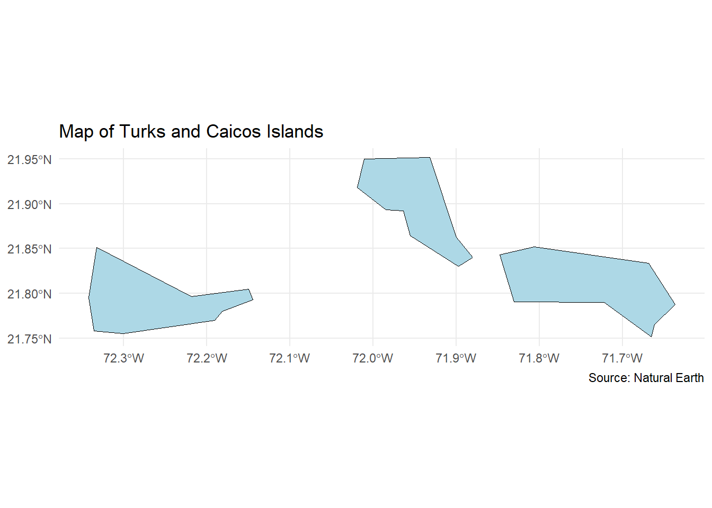

The Purpose of this report will focus on EDA and modelling a dataset obtained regarding the Total capital stock for urban and rural areas in the Turks and Caicos. Most of the Key Facts about TCI EDA is shown in the Shiny App and the Presentation for other Key Facts about TCI.
Warning: package 'ggplot2' was built under R version 4.4.2
Warning: package 'dplyr' was built under R version 4.4.2
── Attaching core tidyverse packages ──────────────────────── tidyverse 2.0.0 ──
✔ dplyr 1.1.4 ✔ readr 2.1.5
✔ forcats 1.0.0 ✔ stringr 1.5.1
✔ ggplot2 3.5.1 ✔ tibble 3.2.1
✔ lubridate 1.9.3 ✔ tidyr 1.3.1
✔ purrr 1.0.2
── Conflicts ────────────────────────────────────────── tidyverse_conflicts() ──
✖ dplyr::filter() masks stats::filter()
✖ dplyr::lag() masks stats::lag()
ℹ Use the conflicted package (<http://conflicted.r-lib.org/>) to force all conflicts to become errors
Warning: package 'sf' was built under R version 4.4.2
Linking to GEOS 3.12.2, GDAL 3.9.3, PROJ 9.4.1; sf_use_s2() is TRUE
Warning: package 'rnaturalearth' was built under R version 4.4.2
Warning: package 'rnaturalearthdata' was built under R version 4.4.2
Attaching package: 'rnaturalearthdata'
The following object is masked from 'package:rnaturalearth':
countries110
Warning: package 'tmap' was built under R version 4.4.2
Breaking News: tmap 3.x is retiring. Please test v4, e.g. with
remotes::install_github('r-tmap/tmap')
corrplot 0.95 loaded
Let’s retrieve spatial data for Turks and Caicos
world <-ne_countries(scale ="medium", returnclass ="sf")turks_caicos <- world[world$name =="Turks and Caicos Is.", ]# Let's plot a simple map of the Turks and Caicos Islands using ggplotggplot(data = turks_caicos) +geom_sf(fill ="lightblue", color ="black") +labs(title ="Map of Turks and Caicos Islands",caption ="Source: Natural Earth" ) +theme_minimal()

# Let's create and interactive map using tmap:tmap_mode("view") # Set to interactive mode
tmap mode set to interactive viewing
tm_shape(turks_caicos) +tm_polygons(col ="lightblue", border.col ="black") +tm_layout(title ="Interactive Map of Turks and Caicos Islands")
GDP Data of the Turks and Caicos
GDP <-read.csv("Turks_GDP.csv", header =TRUE)# Convert character column to Date formatGDP$Date <-as.Date(GDP$Date, format ="%m/%d/%Y")# Extract only the YearGDP$Year <-format(GDP$Date, "%Y")GDP <- GDP %>%rename(GDP_billions_USD = GDP..Billions.of.US..., Per_Capita = Per.Capita..US... )GDP$Per_Capita_Scaled <- GDP$Per_Capita /10000# Scale down for visualization# Plot with adjusted y-axis limits# Rescale Per Capita to match the GDP scaleGDP$Per_Capita_Scaled <- GDP$Per_Capita /10000# Adjust scalingGDP_long <- GDP %>%pivot_longer(cols =c(GDP_billions_USD, Per_Capita_Scaled),names_to ="Metric", values_to ="Value")# Updated PlotGDP_plot <-ggplot(GDP_long, aes(x = Year, y = Value, group = Metric)) +# Bars for GDPgeom_bar(data =subset(GDP_long, Metric =="GDP_billions_USD"),aes(fill ="GDP (Billions USD)"), stat ="identity", alpha =0.7) +# Line and points for Per Capitageom_line(data =subset(GDP_long, Metric =="Per_Capita_Scaled"),aes(color ="Per Capita (USD)"), size =1) +geom_point(data =subset(GDP_long, Metric =="Per_Capita_Scaled"),aes(color ="Per Capita (USD)"), size =2) +# Define the y-axis and secondary axisscale_y_continuous(name ="GDP (Billions USD)", limits =c(0, 3.5),sec.axis =sec_axis(~ . *10000, name ="Per Capita (USD)") ) +# Single legend with manual color and fill labelsscale_fill_manual(name ="Metric", values =c("GDP (Billions USD)"="skyblue")) +scale_color_manual(name ="Metric", values =c("Per Capita (USD)"="red")) +# Labels and themelabs(title ="GDP (Billions USD) and Per Capita (USD) Over the Years",x ="Year",y ="GDP (Billions USD)" ) +theme_minimal() +theme(axis.text.x =element_text(angle =45, hjust =1),legend.position ="top"# Place legend at the top )
Warning: Using `size` aesthetic for lines was deprecated in ggplot2 3.4.0.
ℹ Please use `linewidth` instead.
# Save the plot as a PNG image# Save the plot with a white backgroundggsave(filename ="GDP_plot_white_bg.png",plot = GDP_plot,width =10, height =6,units ="in",dpi =300,bg ="white"# Explicitly set background to white)
Read in Capital Stock Data of TCI, create table of important variables and definitions
TCI_stock <-read.csv("turks_model_df.csv", header =TRUE)variable_table <-data.frame("Important_Variables"=c("tot_cu","bed_prv_cu", "bed_pub_cu", "edu_prv_cu","edu_pub_cu", "emp_agr_cu", "emp_gov_cu", "emp_ind_cu","emp_ser_cu", "ic_high_cu", "ic_low_cu", "ic_mhg_cu","ic_mlw_cu", "tot_cr","bed_prv_cr", "bed_pub_cr","edu_prv_cr","edu_pub_cr", "emp_agr_cr","emp_gov_cr","emp_ind_cr","emp_ser_cr", "ic_high_cr", "ic_low_cr", "ic_mhg_cr","ic_mlw_cr"),"Definitions"=c("Total capital stock urban (built environment) in million USD $","Health-private sector-capital stock urban (built environment) in million USD $","Health-public sector-capital stock urban (built environment) in million USD $","Education-private sector-capital stock urban (built environment) in million USD $","Education-public sector-capital stock urban (built environment) in million USD $","Employment-agricol sector-capital stock urban (built environment) in million USD $","Employment-government sector-capital stock urban (built environment) in million USD $","Employment-industrial sector-capital stock urban (built environment) in million USD $","Employment-service sector-capital stock urban (built environment) in million USD $","Housing-high income group-capital stock urban (built environment) in million USD $","Housing-low income group-capital stock urban (built environment) in million USD $","Housing-upper middle income group-capital stock urban (built environment) in million USD $","Housing-lower middle income group-capital stock urban (built environment) in million USD $","Total capital stock rural (built environment) in million USD $","Health-private sector-capital stock rural (built environment) in million USD $","Health-public sector-capital stock rural (built environment) in million USD $","Education-private sector-capital stock rural (built environment) in million USD $","Education-public sector-capital stock rural (built environment) in million USD $","Employment-agricol sector-capital stock rural (built environment) in million USD $","Employment-government sector-capital stock rural (built environment) in million USD $","Employment-industrial sector-capital stock rural (built environment) in million USD $","Employment-service sector-capital stock rural (built environment) in million USD $","Housing-high income group-capital stock rural (built environment) in million USD $","Housing-low income group-capital stock rural (built environment) in million USD $","Housing-upper middle income group-capital stock rural (built environment) in million USD $","Housing-lower middle income group-capital stock rural (built environment) in million USD $" ))# Print the tablekable(variable_table, caption ="Important Variables and Definitions")
Important Variables and Definitions
Important_Variables
Definitions
tot_cu
Total capital stock urban (built environment) in million USD $
bed_prv_cu
Health-private sector-capital stock urban (built environment) in million USD $
bed_pub_cu
Health-public sector-capital stock urban (built environment) in million USD $
edu_prv_cu
Education-private sector-capital stock urban (built environment) in million USD $
edu_pub_cu
Education-public sector-capital stock urban (built environment) in million USD $
emp_agr_cu
Employment-agricol sector-capital stock urban (built environment) in million USD $
emp_gov_cu
Employment-government sector-capital stock urban (built environment) in million USD $
emp_ind_cu
Employment-industrial sector-capital stock urban (built environment) in million USD $
emp_ser_cu
Employment-service sector-capital stock urban (built environment) in million USD $
ic_high_cu
Housing-high income group-capital stock urban (built environment) in million USD $
ic_low_cu
Housing-low income group-capital stock urban (built environment) in million USD $
ic_mhg_cu
Housing-upper middle income group-capital stock urban (built environment) in million USD $
ic_mlw_cu
Housing-lower middle income group-capital stock urban (built environment) in million USD $
tot_cr
Total capital stock rural (built environment) in million USD $
bed_prv_cr
Health-private sector-capital stock rural (built environment) in million USD $
bed_pub_cr
Health-public sector-capital stock rural (built environment) in million USD $
edu_prv_cr
Education-private sector-capital stock rural (built environment) in million USD $
edu_pub_cr
Education-public sector-capital stock rural (built environment) in million USD $
emp_agr_cr
Employment-agricol sector-capital stock rural (built environment) in million USD $
emp_gov_cr
Employment-government sector-capital stock rural (built environment) in million USD $
emp_ind_cr
Employment-industrial sector-capital stock rural (built environment) in million USD $
emp_ser_cr
Employment-service sector-capital stock rural (built environment) in million USD $
ic_high_cr
Housing-high income group-capital stock rural (built environment) in million USD $
ic_low_cr
Housing-low income group-capital stock rural (built environment) in million USD $
ic_mhg_cr
Housing-upper middle income group-capital stock rural (built environment) in million USD $
ic_mlw_cr
Housing-lower middle income group-capital stock rural (built environment) in million USD $
Read in Capital Stock Data of TCI, look at correlation matrix :
We are interested in doing a linear regression to see what predictors can accurately predict the Total Capital Stock for Urban and Rurul Locations in TCI. We will check assumptions to be able to fit a linear model.
Warning in cor(urban_predictors, use = "pairwise.complete.obs"): the standard
deviation is zero
urban_corrplot <-corrplot(cor_matrix, method ="color", type ="upper", tl.col ="black", tl.srt =45)
#let's repeat this step for rural predictorsrural_predictors <- TCI_stock[,c("tot_cr","bed_prv_cr", "bed_pub_cr", "edu_prv_cr","edu_pub_cr", "emp_agr_cr", "emp_gov_cr", "emp_ind_cr","emp_ser_cr", "ic_high_cr", "ic_low_cr", "ic_mhg_cr","ic_mlw_cr")]cor_matrix2 <-cor(rural_predictors, use ="pairwise.complete.obs")
Warning in cor(rural_predictors, use = "pairwise.complete.obs"): the standard
deviation is zero
urban_corrplot <-corrplot(cor_matrix2, method ="color", type ="upper", tl.col ="black", tl.srt =45)
From this step, it seems like everything is highly correlated with each other and there are some missing values. This is likely violating collinearity. But for the sake, let’s entertain some models.
# Let's start with all the private sector predictors, with high income on the urban stockurban_private_fit <-lm(tot_cu ~ bed_prv_cu + edu_prv_cu + emp_ind_cu + ic_high_cu, data = TCI_stock)summary(urban_private_fit)
Warning in summary.lm(urban_private_fit): essentially perfect fit: summary may
be unreliable
Call:
lm(formula = tot_cu ~ bed_prv_cu + edu_prv_cu + emp_ind_cu +
ic_high_cu, data = TCI_stock)
Residuals:
Min 1Q Median 3Q Max
-5.737e-14 8.550e-16 8.550e-16 8.550e-16 2.623e-15
Coefficients: (3 not defined because of singularities)
Estimate Std. Error t value Pr(>|t|)
(Intercept) -1.302e-15 8.830e-16 -1.475e+00 0.145
bed_prv_cu 2.997e+03 1.183e-13 2.534e+16 <2e-16 ***
edu_prv_cu NA NA NA NA
emp_ind_cu NA NA NA NA
ic_high_cu NA NA NA NA
---
Signif. codes: 0 '***' 0.001 '**' 0.01 '*' 0.05 '.' 0.1 ' ' 1
Residual standard error: 7.173e-15 on 65 degrees of freedom
Multiple R-squared: 1, Adjusted R-squared: 1
F-statistic: 6.421e+32 on 1 and 65 DF, p-value: < 2.2e-16
# Let's continue with all the private sector predictors, with low income on the urban stockurban_public_fit <-lm(tot_cu ~ bed_pub_cu + edu_pub_cu + emp_ind_cu + ic_low_cu, data = TCI_stock)summary(urban_public_fit)
Warning in summary.lm(urban_public_fit): essentially perfect fit: summary may
be unreliable
Call:
lm(formula = tot_cu ~ bed_pub_cu + edu_pub_cu + emp_ind_cu +
ic_low_cu, data = TCI_stock)
Residuals:
Min 1Q Median 3Q Max
-9.487e-15 -7.250e-16 -7.250e-16 -7.250e-16 5.586e-14
Coefficients: (3 not defined because of singularities)
Estimate Std. Error t value Pr(>|t|)
(Intercept) 4.340e-16 8.696e-16 4.990e-01 0.619
bed_pub_cu 6.581e+02 2.558e-14 2.573e+16 <2e-16 ***
edu_pub_cu NA NA NA NA
emp_ind_cu NA NA NA NA
ic_low_cu NA NA NA NA
---
Signif. codes: 0 '***' 0.001 '**' 0.01 '*' 0.05 '.' 0.1 ' ' 1
Residual standard error: 7.064e-15 on 65 degrees of freedom
Multiple R-squared: 1, Adjusted R-squared: 1
F-statistic: 6.62e+32 on 1 and 65 DF, p-value: < 2.2e-16
It seems that the only significant predictors for the urban stock prediction model with low p-value is the bed_prv_cu variable (Health-private sector-capital stock urban (built environment) in million USD $).Interesting to note that using rural predictors to estimate urban stock price results in non NA results. This is probably due to collinearity issue of using urban predictors to predict urban stocks.
Let’s do the Rural Modeling using Urban Predictors:
Call:
lm(formula = tot_cr ~ bed_prv_cr + bed_pub_cu + edu_prv_cu +
emp_ind_cu + ic_high_cu + ic_low_cu, data = TCI_stock)
Residuals:
Min 1Q Median 3Q Max
-0.155136 -0.070513 -0.002824 0.083679 0.154560
Coefficients: (4 not defined because of singularities)
Estimate Std. Error t value Pr(>|t|)
(Intercept) 3.689e-03 1.232e-02 0.299 0.766
bed_prv_cr 2.999e+03 1.189e+00 2522.634 <2e-16 ***
bed_pub_cu -3.872e-01 3.563e-01 -1.087 0.281
edu_prv_cu NA NA NA NA
emp_ind_cu NA NA NA NA
ic_high_cu NA NA NA NA
ic_low_cu NA NA NA NA
---
Signif. codes: 0 '***' 0.001 '**' 0.01 '*' 0.05 '.' 0.1 ' ' 1
Residual standard error: 0.09278 on 64 degrees of freedom
Multiple R-squared: 1, Adjusted R-squared: 1
F-statistic: 3.579e+06 on 2 and 64 DF, p-value: < 2.2e-16
When using urban predictors to predict rural stock, there are some NAs in model, so it seems that there is more collinearity issue.
Conclusion:
Due to time constraints, EDA was not able to be performed thoroughly to choose the correct predictors and even the most appropriate model. Future works include spend more time on EDA, doing literature review.
References:
This section includes all citations for sources used in the report, shiny app, and presentation.
[1] Stanford University. (n.d.). [GAR15 Global Exposure Dataset for Turks and Caicos Islands]. Stanford Digital Repository. https://purl.stanford.edu/wb949hp4321 [2] Worldometer. (n.d.). Dominican Republic GDP. Worldometer. Retrieved June 17, 2024, from https://www.worldometers.info/gdp/dominican-republic-gdp/ [3] Macrotrends. (n.d.). Cuba GDP per capita 1960-2024. Macrotrends. Retrieved June 17, 2024, from https://www.macrotrends.net/global-metrics/countries/CUB/cuba/gdp-per-capita [4] Worldometer. (n.d.). Bahamas GDP. Worldometer. Retrieved June 17, 2024, from https://www.worldometers.info/gdp/bahamas-gdp/ [5] Government of Turks and Caicos Islands. (2023). National tourism development strategy and action plan 2023. Government of Turks and Caicos Islands. Retrieved June 17, 2024, from https://gov.tc/tourismregulations/images/docs/TCI%20National%20Tourism%20Development%20Strategy%20and%20Action%20Plan%202023.pdf [6] Government of Turks and Caicos Islands. (n.d.). Turks and Caicos Islands statistics department. Government of Turks and Caicos Islands. Retrieved June 17, 2024, from https://www.gov.tc/stats/ [7] Government of Turks and Caicos Islands. (n.d.). Cabinet. Government of Turks and Caicos Islands. Retrieved June 17, 2024, from https://www.gov.tc/premier/cabinet [8] Government of Turks and Caicos Islands. (n.d.). Tourism statistics. Government of Turks and Caicos Islands. Retrieved June 17, 2024, from https://www.gov.tc/stats/statistics/economic/41-tourism [9] Encyclopaedia Britannica. (n.d.). Caribbean Sea. Encyclopaedia Britannica. Retrieved June 17, 2024, from https://www.britannica.com/place/Caribbean-Sea [10] Central Intelligence Agency. (n.d.). Turks and Caicos Islands: Flag. The World Factbook. Retrieved June 17, 2024, from https://www.cia.gov/the-world-factbook/countries/turks-and-caicos-islands/flag/